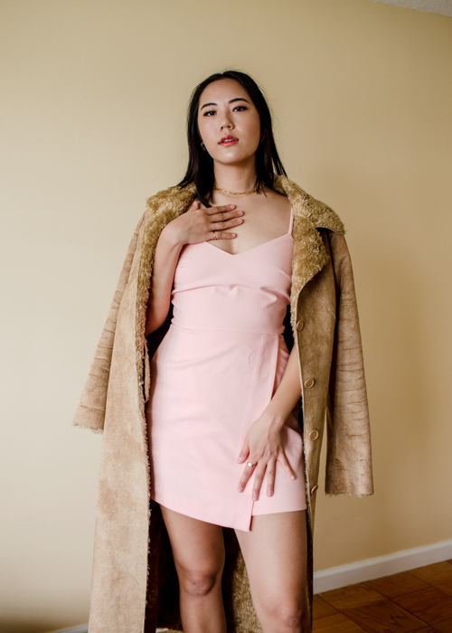
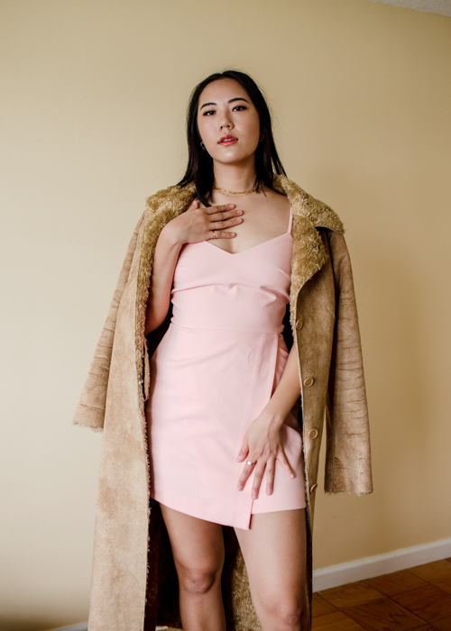

Adri Tan
Alta Via 1, 2024
Alta Via 1 is a zine series by Adri Tan that documents their 11 day trek with their family through the Dolomites in Italy. Through photos, sketches, and diary entries, they recount their experience hiking as one of the only people of color on the trail.
5.5 x 8.5 in. handbound zines, 24-30 pages each


 
